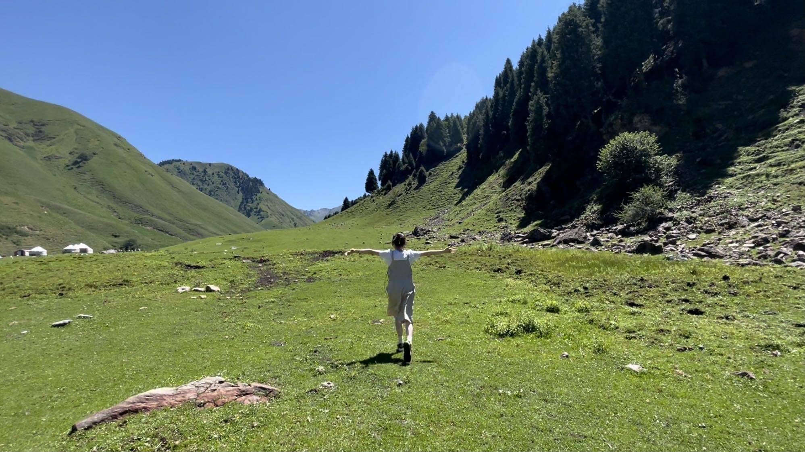

About me
My Hobbies
- Movies
- Fictions
Hi! I'm Yiyun Cao and I'm from China. My pronouns are she/her. I like music, movies, fictions…anything that sparks my imagination. I enjoy having thought-provoking conversations with my friends, exploring countless possibilities on any interesting subjects(such as mysterious things).
I found this program match my interests. I like learning adobe software, it gives me sense of achievements. I got excited every time I create something new. Learning is much more enjoyable compare many things in life. Life is tough after all.
I hope I can create my own website one day with knowledge of coding. To be honest, I was afraid of coding before(it seems really difficult to me). But I started to have interests in coding(thanks to the cat theme on first week) and I looking forward to learn solid skills. I really want to learn HTMLperfectly.
What would life be if we had no courage to attempt anything? -Vincent Van Gogh